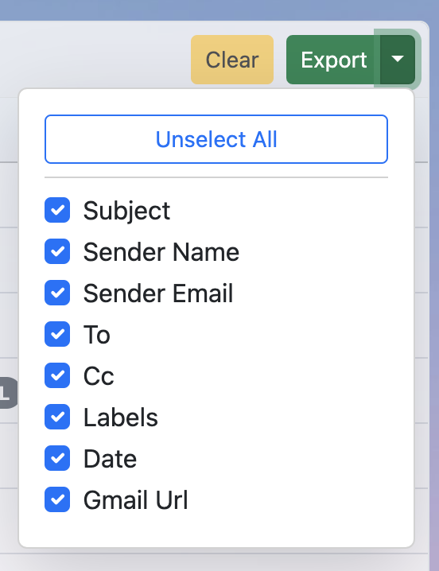
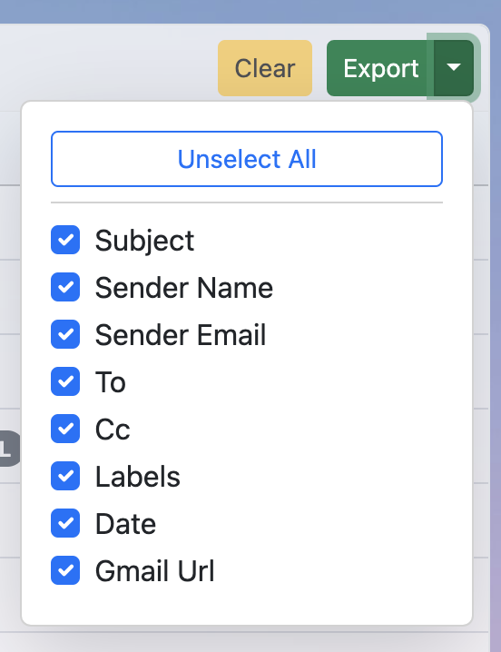
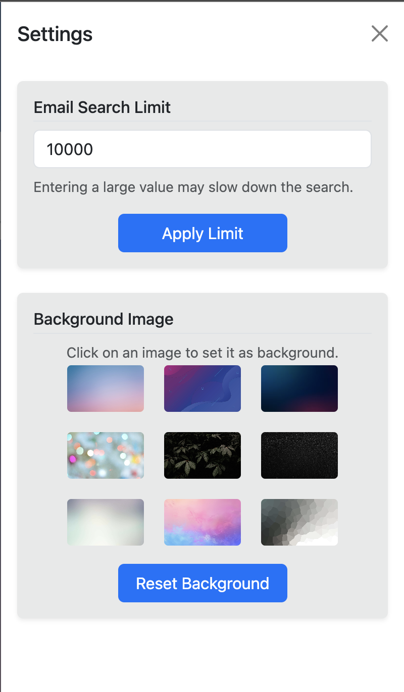

Gmail Keyword Deep Search – Installation & Usage Guide
Gmail Keyword Deep Search is a Chrome extension that helps you search deeply inside your Gmail inbox. It scans email metadata (subject, sender, recipients, labels, date) in real time, shows live updates in a full dashboard, and lets you filter, export, and open emails directly in Gmail.
1. Install in Chrome
- Open the extension page in the Chrome Web Store.
- Click Add to Chrome → Add Extension.
- Once installed, click the extension icon or open the new dashboard tab.
2. First-Time Setup
The first time you search, you’ll be asked to log in with Google:
- Click Search or use the Change Account button.
- Select your Gmail account and grant access.
- ⚠️ Google may show a warning that “This app isn’t verified.”
Click Advanced → Go to Gmail Keyword Deep Search to continue. This appears only because the app is not yet verified by Google, but it is safe to use.
3. How to Use
- Enter a keyword (e.g.
invoice) in the dashboard search bar. - Click Search. The extension will start scanning your Gmail messages.
- Progress updates appear live in the Email Search Updates panel — showing the keyword and how many emails have been checked.
- You can filter results by labels, date ranges, or refine after search using the filter panel.
- Click an email row to preview metadata or redirect to Gmail to view the full email.
- Use the Export button to export filtered results as CSV.
- Use Stop to end a search midway, and Clear to reset results.


 

4. Settings
By default, the extension scans up to 10,000 emails per search. You can change this limit anytime from the Settings page.
5. Key Features
Full Dashboard UI
Email Search Updates
Advanced Filters
Export Results
View in Gmail
Customizable Search Limit
Privacy